모든 스크린샷을 확인했습니다. 자막이 없는 상태에서 스크린샷의 시각적 정보를 바탕으로 최대한 상세한 분석 보고서를 작성하겠습니다.
채널: Joseph Carlson After Hours | 길이: 26:23 | 날짜: 2026년 2월 4일
핵심 내용
- 2026년 2월 초 주식시장 전반에 걸친 대규모 매도세(패닉 셀링)가 발생했다. Joseph Carlson은 자신의 워치리스트와 포트폴리오에 포함된 종목들의 급격한 하락을 "Dip Finder" 도구를 통해 보여주며, 5일간 거의 모든 종목이 빨간색(하락)이었음을 시각적으로 증명했다. EFX(Equifax)가 -13.67%, SPOT(Spotify)이 -11.32% 등 상당한 낙폭을 기록했다.
- 주요 지수 현황: Dow Jones +0.25%, S&P 500 -0.86%, Nasdaq -2.17%. 특히 기술주 중심의 Nasdaq이 가장 큰 하락을 보였으며, 이는 시장의 패닉이 기술/성장주에 집중되었음을 시사한다. 이 영상이 촬영된 2026년 2월 4일 기준으로, 시장 전반의 불안정성이 두드러졌다.
- Carlson의 M1 Finance 포트폴리오가 공개되었으며, 여러 슬라이스(파이)로 나뉘어 관리되고 있다. 한 포트폴리오(4 Slices)에는 Mastercard($184,253, +97.20%), S&P Global($81,897, +29.13%), Moody's($44,461, +19.74%), Intuit($43,756, -5.55%)이 포함되어 있다. 또 다른 포트폴리오에는 GOOG($119,376, +105.82%), META($118,348, -9.55%), ASML($114,697, +107.03%), MSFT($67,295, +118.30%)이 포함되어 있다.
- Uber 실적 발표와 주가 급락이 주요 토론 주제였다. Uber Technologies(NYSE: UBER)는 2026년 2월 4일 실적 발표를 앞두고 $74.71로 -4.13% 하락 중이었다. CNBC 실시간 화면에서는 시간외 거래에서 UBER가 $71.26(-8.56%)로 더 큰 폭의 하락을 보였고, Lyft도 $16.25(-3.04%)로 동반 하락했다. Uber CEO Dara Khosrowshahi의 CNBC 인터뷰 장면이 보인다.
- Netflix CEO Ted Sarandos의 상원 사법위원회(Judiciary Committee) 증언이 다루어졌다. 2026년 2월 3일, Netflix CEO Ted Sarandos가 상원 사법위원회에서 증언하는 장면이 포함되었다. Ted Cruz 상원의원과 Josh Hawley 상원의원이 질의하는 장면이 확인되며, 이는 Netflix 및 빅테크 기업에 대한 정치적/규제적 압력과 관련된 이슈로 보인다. Hawley 의원은 차트(2024-2025 데이터)를 들고 질의하는 모습이 포착되었다.
- Carlson은 Qualtrim이라는 주식 분석 도구를 활용하여 개별 종목을 분석했다. Alphabet(GOOG) 페이지에서는 $330.76(-2.92%), 실적 발표일 2월 4일로 표시되었으며, "Neutral" 평가와 함께 "Alphabet heads into high-bar earnings"라는 브리프가 제공되었다. Uber 페이지에서는 "Bearish" 평가와 함께 "Uber shares drop amid selloff"라는 브리프가 나타났다.
- "Story Fund"라는 별도의 성장주 포트폴리오가 공개되었다. 이 펀드에는 AMZN($148,801, +116.12%), NFLX($106,595, +119.70%), GOOG($77,810, +333.69%), MSFT($21,005, +91.97%), SPGI($19,963, +23.03%), DUOL($15,841, -69.03%) 등이 포함되어 있다. 펀드 설명에는 "Typically category winners - first movers advantage - future industries"라고 적혀 있어, 카테고리 선도 기업 및 미래 산업 투자를 목표로 함을 알 수 있다.
상세 분석
도입부 - 시장 패닉 상황 개관 [0:00 - 5:16]
Joseph Carlson은 자신의 스튜디오("The Joseph Carlson Show" 네온 사인이 있는 배경, 미국 국기, 식물, 책장이 보이는 공간)에서 카메라를 향해 이야기하며 영상을 시작한다. 검은색 상의를 입고 마이크 앞에 앉아 있는 그는 진지한 표정으로 현재 주식시장의 패닉 상황을 설명하기 시작한다.
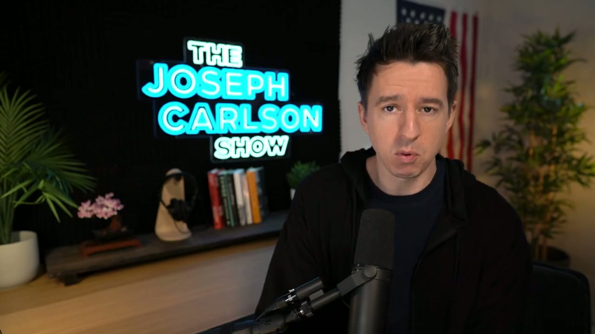
Joseph Carlson 스튜디오 화면
초반 약 5분간은 Carlson이 카메라를 직접 보며 시장 상황에 대한 자신의 견해를 밝히는 "토킹 헤드" 형식으로 진행된다. 그의 표정은 때로 심각하고, 때로 생각에 잠긴 듯한 모습으로 변화하며, 시장의 불확실성과 투자자들의 불안감에 대해 이야기하고 있음을 알 수 있다.
Dip Finder - 5일간 가격 변동 분석 [5:16 - 7:02]
Carlson은 화면을 전환하여 "Dip Finder"라는 도구를 보여준다. 이 도구는 워치리스트에 포함된 종목들의 최근 5일간 가격 변동을 빨간색 막대그래프로 시각화하여 보여준다.
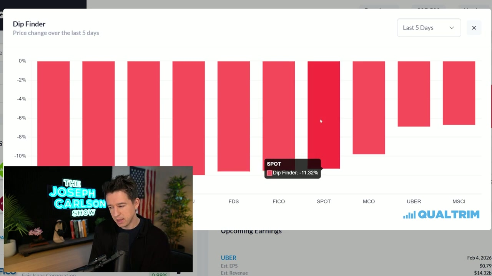
Dip Finder 차트 - EFX -13.67%
첫 번째 Dip Finder 화면에서 확인되는 종목들:
- EFX (Equifax): -13.67% (가장 큰 하락폭)
- SPGI (S&P Global): 약 -12% 수준
- DUOL (Duolingo): 약 -5% 수준
- INTU (Intuit): 약 -5% 수준
- FDS (FactSet Research Systems): 약 -4% 수준으로 $223.45, +0.37%
- FICO (Fair Isaac Corporation): 약 -3% 수준으로 $1.34k, 0.98%
하단에는 "Upcoming Earnings" 섹션이 보이며, UBER가 2026년 2월 4일 실적 발표 예정으로, Est. EPS $0.79, Est. Revenue $14.32B로 표시되어 있다.
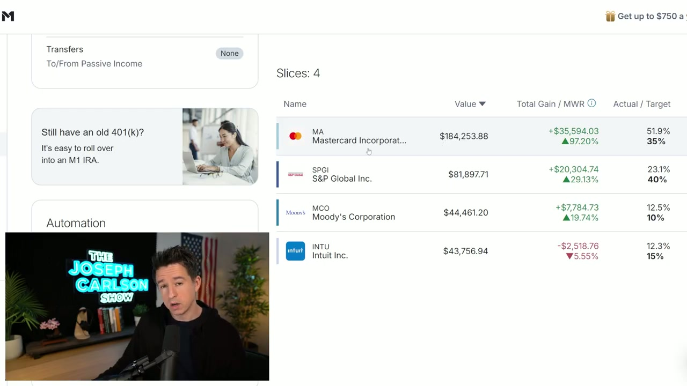
Dip Finder 차트 - SPOT -11.32%
두 번째 Dip Finder 화면(스크롤)에서 확인되는 종목들:
- FDS, FICO, SPOT (Spotify): -11.32%
- MCO (Moody's Corporation): 약 -3% 수준
- UBER: 약 -4~5% 수준
- MSCI: 약 -3% 수준
화면 우측 하단에는 QUALTRIM 로고가 보이며, 이는 Carlson이 사용하는 주식 분석 플랫폼이다. 모든 종목이 빨간색으로 표시되어 있어, 워치리스트 전체가 하락했음을 극적으로 보여준다.
M1 Finance 포트폴리오 분석 - 금융 데이터 섹터 [7:02 - 9:40]
Carlson은 M1 Finance 플랫폼으로 화면을 전환하여 자신의 실제 포트폴리오를 공개한다.
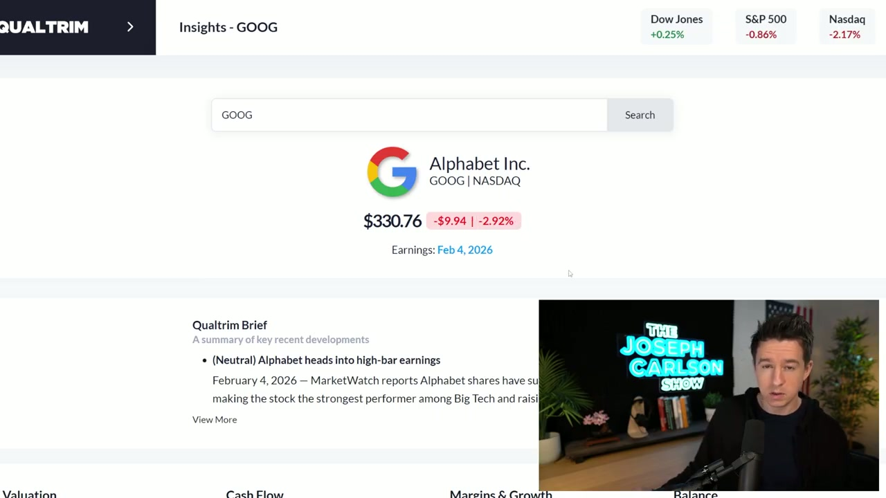
M1 Finance 포트폴리오 - 금융 데이터 슬라이스
금융 데이터 섹터 포트폴리오 (4 Slices):
- MA (Mastercard Incorporated): $184,253.88 | +$35,594.03 (+97.20%) | 비중 51.9% (목표 35%)
- SPGI (S&P Global Inc.): $81,897.71 | +$20,304.74 (+29.13%) | 비중 23.1% (목표 40%)
- MCO (Moody's Corporation): $44,461.20 | +$7,784.73 (+19.74%) | 비중 12.5% (목표 10%)
- INTU (Intuit Inc.): $43,756.94 | -$2,518.76 (-5.55%) | 비중 12.3% (목표 15%)
좌측에는 M1 IRA 광고("Still have an old 401(k)? It's easy to roll over into an M1 IRA.")가 보이며, Transfers 섹션에는 "To/From Passive Income: None"으로 표시되어 있다.
주목할 점은 Mastercard가 거의 100% 가까운 수익률을 기록하고 있으며 목표 비중(35%)보다 훨씬 높은 실제 비중(51.9%)을 보이고 있다는 것이다. 반면 Intuit은 유일하게 손실(-5.55%)을 기록 중이다.
M1 Finance 포트폴리오 분석 - 빅테크 섹터 [9:40 - 13:11]
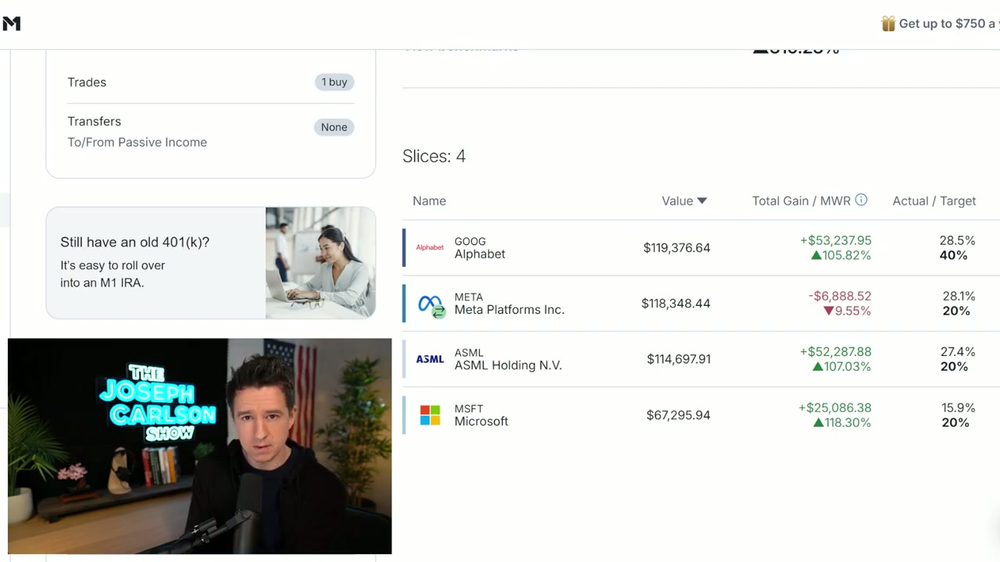
M1 Finance 포트폴리오 - 빅테크 슬라이스
빅테크 포트폴리오 (4 Slices):
- GOOG (Alphabet): $119,376.64 | +$53,237.95 (+105.82%) | 비중 28.5% (목표 40%)
- META (Meta Platforms Inc.): $118,348.44 | -$6,888.52 (-9.55%) | 비중 28.1% (목표 20%)
- ASML (ASML Holding N.V.): $114,697.91 | +$52,287.88 (+107.03%) | 비중 27.4% (목표 20%)
- MSFT (Microsoft): $67,295.94 | +$25,086.38 (+118.30%) | 비중 15.9% (목표 20%)
이 포트폴리오에서는 Trades: "1 buy"가 기록되어 있어, 하락장에서 매수를 진행했음을 알 수 있다. Transfers는 "To/From Passive Income: None"으로 되어 있다.
ASML과 Microsoft가 각각 107%와 118%의 높은 수익률을 기록하고 있으며, Alphabet도 105% 이상의 수익률을 보이고 있다. 반면 Meta는 유일하게 -9.55% 손실 상태이다.
Alphabet(GOOG) 실적 발표 분석 [7:54 - 8:47]
Qualtrim - Alphabet 분석 페이지
Carlson은 Qualtrim 플랫폼을 통해 Alphabet(GOOG)을 상세 분석한다.
Alphabet Inc. (GOOG | NASDAQ):
- 주가: $330.76
- 당일 변동: -$9.94 | -2.92%
- 실적 발표일: 2026년 2월 4일 (당일)
상단 지수 현황:
- Dow Jones: +0.25% (녹색)
- S&P 500: -0.86% (빨간색)
- Nasdaq: -2.17% (빨간색)
Qualtrim Brief (주요 최근 동향 요약):
- (Neutral) Alphabet heads into high-bar earnings - 2026년 2월 4일자 MarketWatch 보도에 따르면, Alphabet 주식이 빅테크 중 가장 강한 퍼포먼스를 보여왔으며(surged), 이로 인해 높은 실적 기대치(high bar)가 형성되었다.
화면 하단에는 Valuation, Cash Flow, Margins & Growth, Balance 등의 분석 탭이 보인다.
Story Fund - 성장주 포트폴리오 [11:25 - 14:57]
Carlson은 "Story Fund"라는 별도의 성장주 중심 포트폴리오를 공개한다.
Story Fund 보유 종목:
- AMZN (Amazon.com, Inc.): $148,801.10 | +$47,855.94 (+116.12%)
- NFLX (Netflix): $106,595.83 | +$34,886.50 (+119.70%)
- GOOG (Alphabet): $77,810.08 | +$49,461.10 (+333.69%)
- MSFT (Microsoft): $21,005.45 | +$8,324.78 (+91.97%)
- SPGI (S&P Global): $19,963.50 | +$3,766.22 (+23.03%)
- DUOL (Duolingo): $15,841.29 | -$19,158.71 (-69.03%)
펀드 설명: "Typically category winners - first movers advantage - future industries" (일반적으로 카테고리 승자 - 선점 우위 - 미래 산업)
Automation 섹션에서는 Auto-invest deposits가 비활성화(OFF)되어 있으며, Dividend handling은 "Cash"로 설정되어 있다.
특히 주목할 점은 Alphabet의 333.69%라는 경이적인 수익률과 Duolingo의 -69.03%라는 심각한 손실이다. Amazon과 Netflix도 각각 116%, 119%의 높은 수익률을 기록하고 있다.
Qualtrim 워치리스트 - 개별 종목 현황 [16:42 - 18:28]
Carlson은 Qualtrim의 워치리스트(Stocks)를 스크롤하며 개별 종목들의 현재 상태를 점검한다.
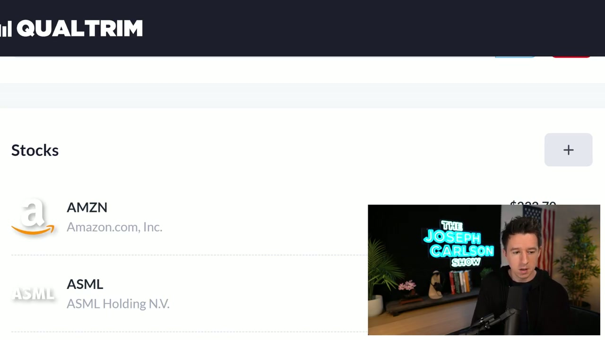
Qualtrim 워치리스트 - AMZN, ASML
워치리스트 종목 현황:
- AMZN (Amazon.com, Inc.): 가격 일부 가려짐
- ASML (ASML Holding N.V.): 표시됨
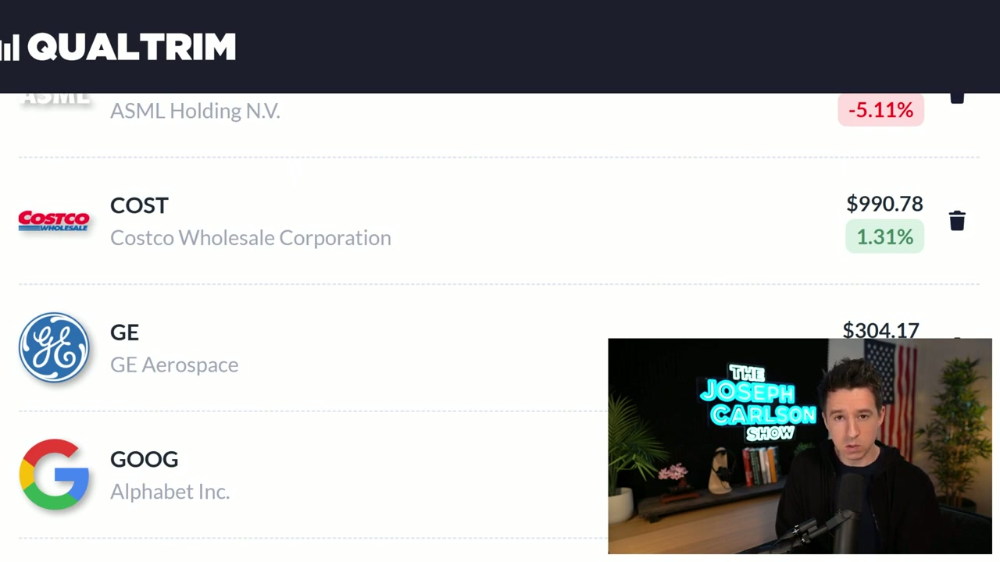
Qualtrim 워치리스트 - ASML, COST, GE, GOOG
- ASML: -5.11% (빨간색)
- COST (Costco Wholesale Corporation): $990.78 | +1.31% (녹색) - 하락장에서도 상승을 보인 방어주
- GE (GE Aerospace): $304.17
- GOOG (Alphabet Inc.): 표시됨
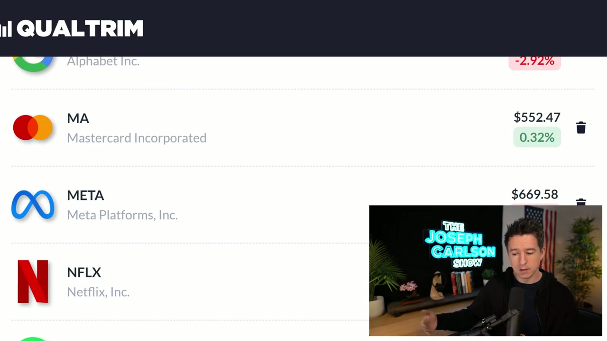
Qualtrim 워치리스트 - GOOG, MA, META, NFLX
- GOOG (Alphabet Inc.): -2.92% (빨간색)
- MA (Mastercard Incorporated): $552.47 | +0.32% (녹색) - 역시 하락장에서 소폭 상승
- META (Meta Platforms, Inc.): $669.58
- NFLX (Netflix, Inc.): 표시됨
Uber 실적 발표 및 주가 급락 [20:13 - 22:51]
Carlson은 Uber의 실적 발표 결과와 시장 반응을 상세히 분석한다.
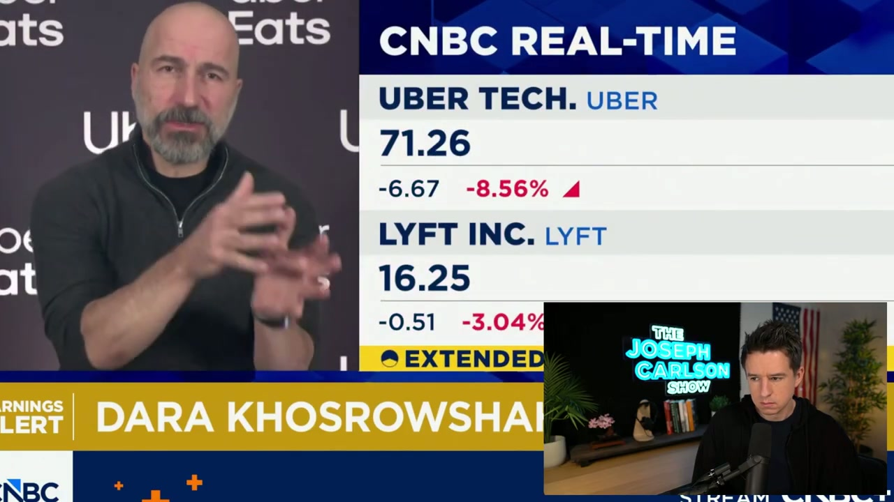
CNBC 실시간 - Uber CEO Dara Khosrowshahi 인터뷰
CNBC Real-Time 화면:
- UBER TECH. (UBER): $71.26 | -$6.67 | -8.56% (시간외 거래)
- LYFT INC. (LYFT): $16.25 | -$0.51 | -3.04% (시간외 거래)
- 화면 하단에 "EXTENDED" 표시가 있어 시간외 거래임을 확인
Uber CEO Dara Khosrowshahi가 CNBC "Earnings Alert"에 출연하여 인터뷰하는 장면이 보인다. 그는 손동작을 하며 적극적으로 설명하고 있는 모습이다. Uber Eats 로고가 배경에 보인다.
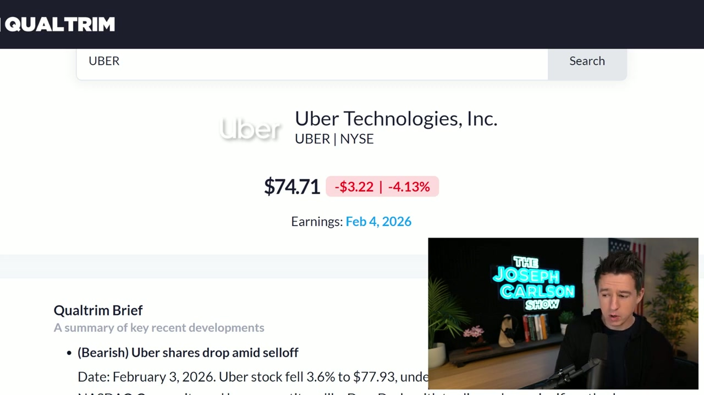
Qualtrim - Uber 분석 페이지
Uber Technologies, Inc. (UBER | NYSE) - Qualtrim 분석:
- 주가: $74.71
- 당일 변동: -$3.22 | -4.13%
- 실적 발표일: 2026년 2월 4일
Qualtrim Brief:
- (Bearish) Uber shares drop amid selloff - 2026년 2월 3일자, Uber 주가가 3.6% 하락하여 $77.93이 되었다고 기술. NASDAQ 전반의 매도세 속에서 하락했음을 설명.
Netflix CEO Ted Sarandos 상원 사법위원회 증언 [24:37 - 26:22]
영상의 후반부에서 Carlson은 Netflix CEO Ted Sarandos의 상원 사법위원회 증언 영상을 보여주며 이에 대해 코멘트한다.
날짜: 2026년 2월 3일 (화면 좌측 상단에 "FEBRUARY 3, 2026" 표시)
하단 배너에 "NETFLIX CEO TED SARANDOS TESTIFIES... JUDICIARY COMMITTEE"라고 표시되어 있다. Ted Cruz 상원의원이 질의석에서 심각한 표정으로 질문하는 장면이 포착된다.
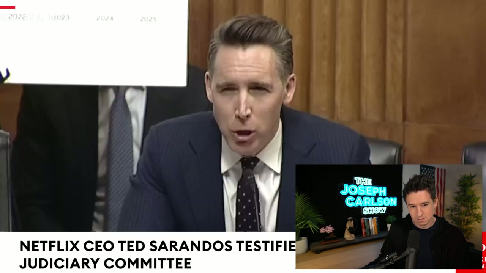
Josh Hawley 상원의원의 질의
이어서 Josh Hawley 상원의원이 차트를 들고 질의하는 장면이 등장한다. 차트에는 2024, 2025 등의 연도가 표시되어 있어, 시간에 따른 추이 데이터를 근거로 질문하고 있음을 알 수 있다. Hawley 의원은 심각하고 단호한 표정으로 발언하고 있다.
이 증언은 Netflix를 비롯한 빅테크 기업들에 대한 미국 정부의 규제 강화 움직임과 관련된 것으로, 투자자들에게 중요한 시장 영향 요인으로 작용할 수 있다.
마무리 코멘트 [25:30 - 26:23]
Carlson은 다시 스튜디오 화면으로 돌아와 영상을 마무리한다. 진지하면서도 침착한 표정으로, 시장 패닉 상황에 대한 최종 견해를 밝히며 영상을 마친다.
주요 인용 및 발언
(Qualtrim Brief - Alphabet) "(Neutral) Alphabet heads into high-bar earnings" - Alphabet 주식이 빅테크 중 가장 강한 퍼포먼스를 보이며 높은 실적 기대치가 형성되었다.
(Qualtrim Brief - Uber) "(Bearish) Uber shares drop amid selloff" - Uber 주가가 전반적인 매도세 속에서 하락했다.
(Story Fund 설명) "Typically category winners - first movers advantage - future industries" - 카테고리 승자, 선점 우위, 미래 산업에 투자하는 펀드 철학.
(뉴스 배너) "NETFLIX CEO TED SARANDOS TESTIFIES... JUDICIARY COMMITTEE" - Netflix CEO가 상원 사법위원회에서 증언했다.
결론 및 시사점
1. 시장 전반의 패닉 매도: 2026년 2월 초, 미국 주식시장은 전반적인 매도세를 겪었다. Nasdaq이 -2.17%로 가장 큰 타격을 받았으며, 기술주와 성장주가 특히 크게 하락했다. Dip Finder에서 보여주듯 워치리스트의 거의 모든 종목이 5일 연속 하락세를 보였다.
2. 포트폴리오의 장기 관점 건전성: Carlson의 포트폴리오는 단기적 하락에도 불구하고 장기적으로는 대부분의 종목에서 상당한 수익을 기록하고 있다. Mastercard(+97%), ASML(+107%), Microsoft(+118%), Alphabet(+105%, Story Fund에서는 +333%) 등 주요 보유 종목들이 여전히 높은 누적 수익률을 유지하고 있어, 장기 투자 전략의 유효성을 보여준다.
3. 실적 시즌의 영향: 2월 4일 Alphabet과 Uber의 실적 발표가 예정되어 있었으며, 이 불확실성이 시장 변동성을 가중시켰다. Uber는 시간외 거래에서 -8.56%까지 급락하며 실적 실망을 반영했다. 반면 Alphabet은 "높은 기대치(high bar)"에 대한 우려에도 비교적 적은 하락(-2.92%)을 보였다.
4. 방어주의 상대적 강세: 하락장에서도 Costco(+1.31%)와 Mastercard(+0.32%) 같은 종목은 소폭이나마 상승을 보여, 시장 패닉 속에서도 방어적 성격의 우량주가 상대적으로 선방했음을 알 수 있다.
5. 규제 리스크의 부상: Netflix CEO의 상원 사법위원회 증언은 빅테크 기업에 대한 정치적/규제적 압력이 지속되고 있음을 보여준다. Ted Cruz와 Josh Hawley 같은 유력 상원의원들의 적극적인 질의는 향후 규제 강화 가능성을 시사하며, 이는 기술주 투자자들이 고려해야 할 추가적인 리스크 요인이다.
6. 하락장에서의 매수 전략: Carlson의 빅테크 포트폴리오에서 "1 buy" 거래가 기록된 것은, 그가 시장 패닉을 오히려 매수 기회로 활용하는 전략을 취하고 있음을 보여준다. 이는 장기 투자자로서의 그의 일관된 투자 철학을 반영한다.
7. Duolingo의 극단적 손실: Story Fund에서 Duolingo가 -69.03%라는 극단적 손실을 기록하고 있어, 고성장 기대 종목의 투자 위험성을 극명하게 보여주는 사례가 되고 있다.
참고: 이 영상은 자막이 제공되지 않아, 분석은 전적으로 31개 스크린샷의 시각적 정보(화면 텍스트, 차트, 데이터, 뉴스 배너 등)를 기반으로 작성되었습니다. 따라서 Carlson의 구두 발언, 세부적인 논거, 비유 등 음성으로만 전달된 내용은 포함되지 않았을 수 있습니다.